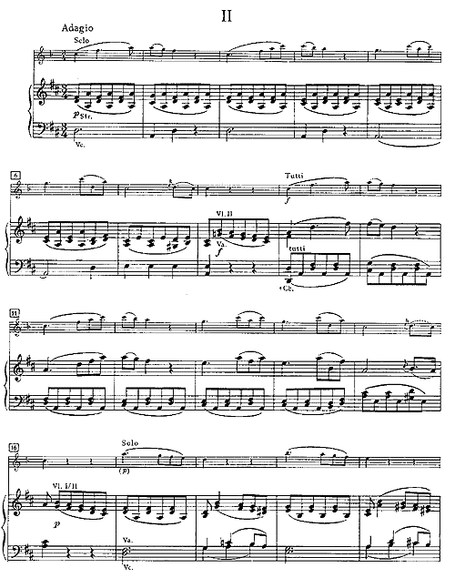
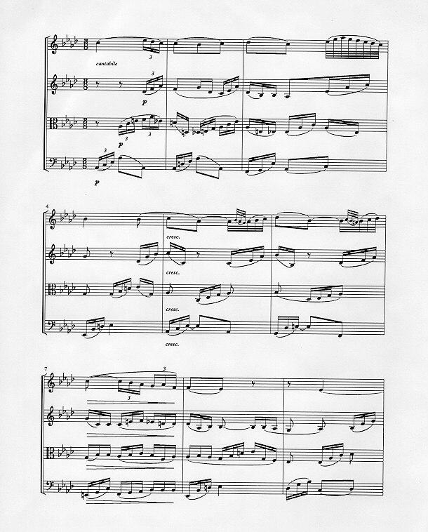

Musical Notation
Music has notation, and has had it for 1000 years. The influence of music notation is apparent from the attention paid to it by the governing powers of the times.
Here are my hand-copied examples
from the 9th, 11th and 12th centuries.

Here is a photo-copy of the 9th century example.

A Benedictine monk named Guido introduced the idea of the staff notation, with a mark (called a note) for each sound, with vertical position giving the pitch, with decorations indicating the duration. There is more to it, of course, but the essential point was that musical notation allowed one to write down a recipe for a piece of music that
- provided for multiple sounds (including words) at one point in time
- made harmony natural (there is some science in this)
- provided for many different instruments
- could be played in real time as it was read from the page.
One can debate the details, but the result is incontrovertible. Music took off. Without Guido's idea, no Mozart, no Beethoven.

Mozart (d. 1791)

Beethoven (d. 1827)
Curiously, in 1322, the church rejected its own invention. Two centuries later, the breakaway Lutheran church adopted the rich new music as its own. Another four centuries later, Pope Paul had relented: article 116 reads: The Church acknowledges Gregorian chant as specially suited to the Roman liturgy: therefore, other things being equal, it should be given pride of place in liturgical services. But other kinds of sacred music, especially polyphony, are by no means excluded from liturgical celebrations, so long as they accord with the spirit of the liturgical action, as laid down in Art. 30.
This is a peculiarly Western view of music. Other cultures may have similar stories.
Project suggestion
From a technical viewpoint, how does musical notation "work?" It is relatively easy to invent other equivalent ways to write down music. The desire for computer input in recent years has spawned a number of ascii-based notations.
The project is an examination of musical notation to determine what it is that has made it win the Darwinian battle for the minds of a millenium of musicians.
Project suggestion
One can write a program to transform ascii-based notation into sheet music. Here is a primitive example. Can you do better? (Java must be enabled to see the results.)
Java sources
References
- rtfm.mit.edu/pub/usenet-by-group/news.answers/music
- The Grove Dictionary of Music and Musicians (see Notation I-III and see also Guido of Arezzo).
- The Golden Encyclopedia of Music, Normal Lloyd, Golden Press (see Notation of Music and History of Musical Notation).
- Handbuch der Notationskunde I, Johannes Wolf, Breitkopf&Hartel, Weisbaden (1963)
Last modified: June 1, 2008
email: McKeeman{at}Mathworks{dot}COM